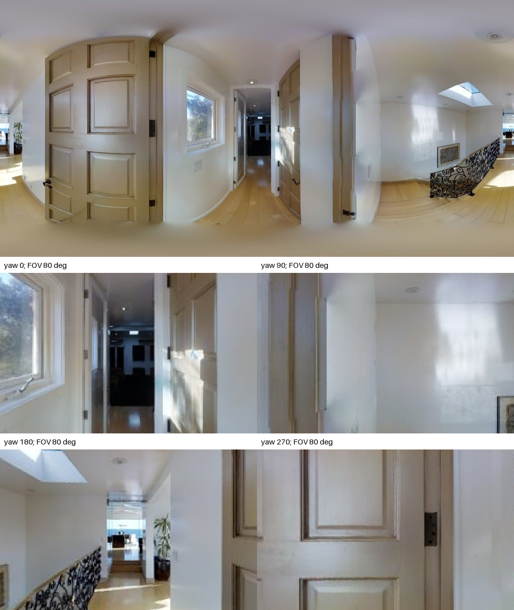
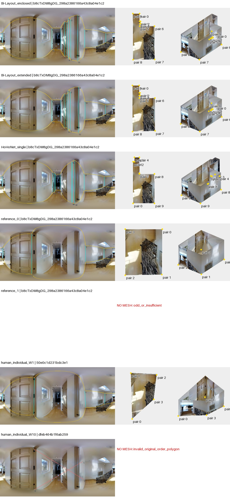
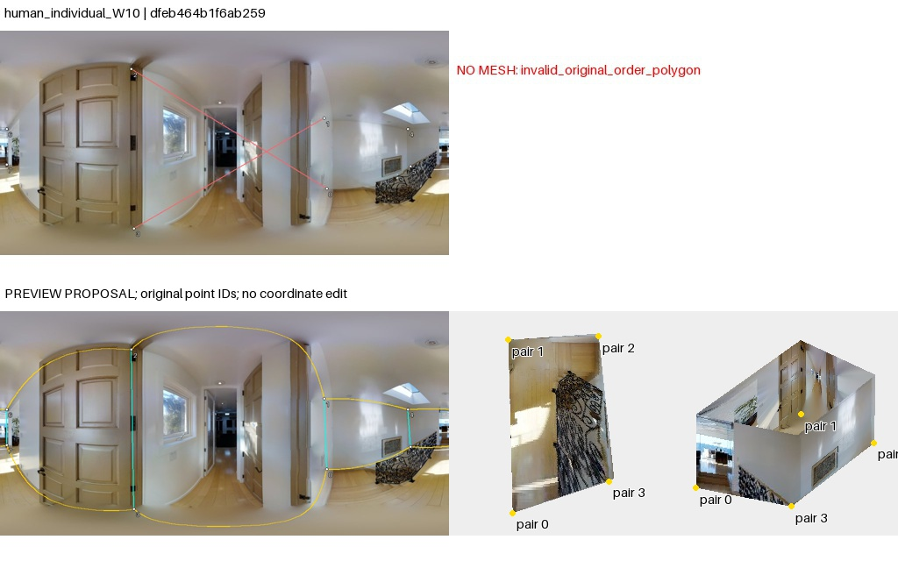

点序复查：旧失败图红线为脚本直连诊断，不是作者墙边证据。导出列表不等于已核实的邻接；重排仅是假设。50图核查与勘误
b8cTxDM8gDG_298a2386166a43c8a04e1c24433f7d15
AI建议；人工最终判断为空。先看原图，再展开布局。图中3D采用单位相机高度、单全景回投影；不是扫描真值。
原始PNG · 2048×1024；点击图片查看原尺寸。下面的旧拼图仅作概览。

楼梯平台与狭长走廊，栏杆后地面下落，门扇遮挡墙角；单一地面假设不能直接覆盖楼梯井。
左窗原始几何，右窗为工具的约束拟合诊断；拟合结果不等于正确标注。无法读取的点组保留失败。高清显示升级未重新裁定旧观察。

模型保留狭长走廊，参考0和所示W1将近门处闭合成简轮廓；楼梯井被代理网格纹理填实不是实测地面。参考1缺坐标，W10原序自交。
待人工判断：楼梯平台与楼梯井的scope及单地面假设应先确认。
04_reference_1：unresolved_no_proposal；原始失败叠图已阅读；无法仅用保守点序调整解决，未生成替代网格。
06_human_individual_W10：visual_candidate_pending_human；楼梯口与前方窄走廊并存，地面有高差，门扇遮住近墙。W10重排可作为近侧短范围的连接候选，但平地代理会填平楼梯，不能证明该范围合法或替代长走廊版本。参考1没有足够点，排序无法补救。
